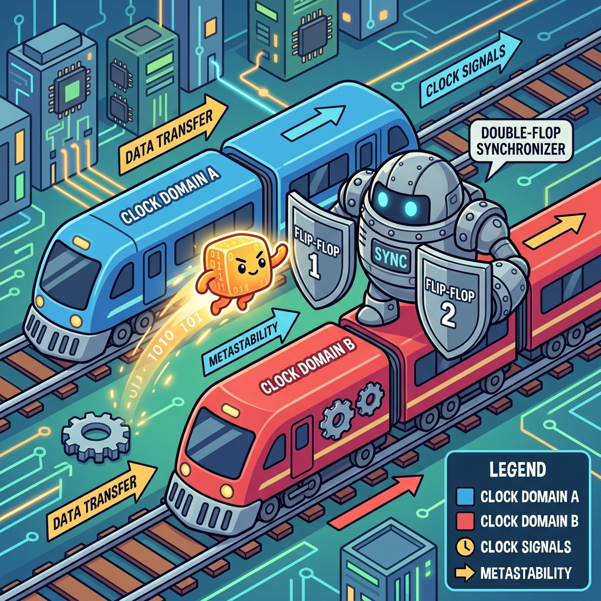
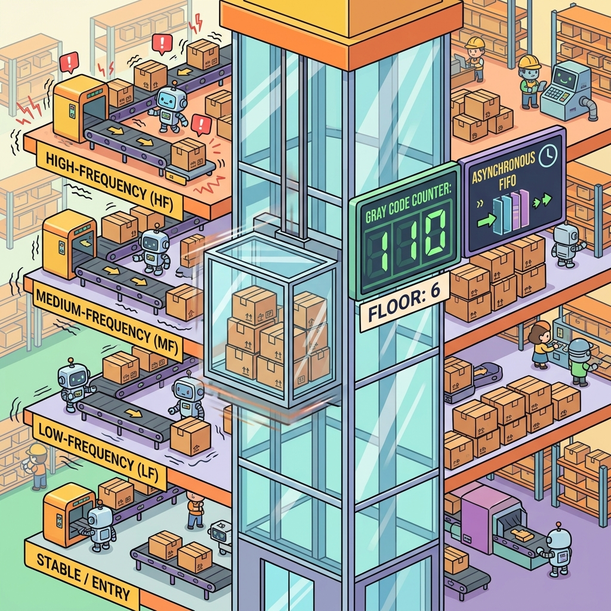

Section 2.3: CDC: Crossing the Clock Domain Minefield
Welcome to the most dangerous part of FPGA design. If board layout is the foundation and timing closure is the ballet, then Clock Domain Crossing (CDC) is a minefield. One wrong step, and your design will work perfectly for three months, then suddenly crash in the middle of a critical operation—only to work perfectly again after a reboot. CDC errors are the "ghosts in the machine."
In a modern AMD FPGA, you might have fifty different clock domains. Data is constantly hopping from a 156MHz PCIe clock to a 322MHz transceiver clock, then over to a 100MHz system clock. Every time a signal crosses from one "time zone" to another without a proper passport, you risk a catastrophic phenomenon called metastability.
Metastability: The Digital Twilight Zone
Remember the setup and hold times from Section 2.1? They only work when the data and the clock are synchronized. When data comes from a different clock domain, it can arrive at any time—including right in the middle of the setup/hold window.
When this happens, the flip-flop doesn't know whether to capture a '0' or a '1'. It enters a metastable state, where its output hovers somewhere in between, or oscillates wildly for a few picoseconds. Eventually, it will settle to a '0' or a '1', but by that time, the downstream logic has already seen the "glitch." Metastability is like a coin landing on its edge; it's unstable, unpredictable, and it will ruin your day.
Brain Power If you have a 100MHz clock and a signal that changes once per second, do you still need a synchronizer? Why or why not? What happens if that 1-second pulse happens to hit the setup window of your 100MHz clock?
The Synchronizer Guard: The Double-Flop Pass
The simplest way to fight metastability is the "Double-Flop Synchronizer." You pass the asynchronous signal through two flip-flops in a row, both clocked by the destination domain. The first flop might go metastable, but it has a whole clock period to "settle" before the second flop captures it.
This doesn't eliminate metastability (nothing can), but it reduces the probability of a failure to practically zero—measurable in billions of years (Mean Time Between Failures, or MTBF). In AMD UltraFast Methodology, any signal crossing a clock domain must have a synchronizer. No exceptions. No excuses.

Fireside Chat: The Fast Clock and the Slow Signal
Fast Clock (400MHz): "I'm waiting! Where's that enable signal from the slow domain? I've ticked four hundred million times while you were just sitting there."
Slow Signal (10MHz): "Hey, I'm coming! I'm crossing the boundary now. Here I am!"
Fast Clock: "Woah, woah! You just arrived right as my shutter was closing. You're all blurry! My first flip-flop is vibrating like a tuning fork. I don't know if you're a 1 or a 0!"
Slow Signal: "Sorry, I don't have a watch that matches yours. Just use your second flip-flop. By the time it clicks, I'll be solid as a rock."
Fast Clock: "Good thing I have that second flop. If I had sent your 'blurry' version straight to the state machine, we'd be in a deadlock right now."
The Bus Skew Disaster: The Silent Killer
A common—and deadly—mistake is trying to use a double-flop synchronizer on a multi-bit bus. Imagine you’re sending the value 0111 (7) to 1000 (8). If the individual bits arrive at slightly different times due to routing skew, the destination domain might capture 0000, 1111, or any other random value for one clock cycle.
You cannot synchronize a bus bit-by-bit. To move a bus across clock domains, you need a Handshake or an Asynchronous FIFO. A handshake involves a "request" signal, waiting for an "acknowledge" signal, and ensuring the data remains stable the whole time. It's safe, but it’s slow.
Async FIFOs: The Silicon Elevators
When you need to move a lot of data quickly between domains, you use an Asynchronous FIFO (First-In-First-Out). It’s like a high-speed elevator between floors of a building. You write data on one side using the source clock, and you read it on the other side using the destination clock.
The mechanism that makes it safe is the Gray coding of its pointers. Inside the FIFO, we have to compare the "Write Pointer" and the "Read Pointer" to know if the FIFO is full or empty. But these pointers live in different clock domains! To compare them safely, we convert them to Gray Code.

Gray Coding: The One-Bit Trick
In standard binary, moving from 011 (3) to 100 (4) changes three bits at once. If you synchronize this, you have three opportunities for a CDC error. In Gray Code, only one bit changes at a time: 010 (3) to 110 (4).
Because only one bit changes, even if the destination clock captures the signal during a transition, it will either see the "old" value or the "new" value. It will never see a random, intermediate value. This is the secret sauce that makes high-speed FIFOs and counters safe in an asynchronous world.
Code Detective: The CDC Constraint
Vivado needs to know when you are intentionally crossing clock domains so it can apply the right timing analysis (or ignore it).
# Code Detective: Why is this 'set_max_delay' dangerous?
set_max_delay 2.0 -from [get_clocks clk_a] -to [get_clocks clk_b] -datapath_only
# Hint: Does this ensure that the bits of a bus arrive at the same time?
The flaw is that set_max_delay -datapath_only constrains each bit individually. It says "no bit may take longer than 2 ns." It says nothing about the bits arriving together. Constrain a 64-bit crossing this way and every bit can legally land anywhere in a 2 ns spread — which is exactly the tearing failure from earlier in this section, now blessed by a constraint file.
The fix is both constraints, applied to the crossing registers, not to the clocks:
# Corrected: bound the latency AND the spread.
#
# Scope to the actual crossing registers. Constraining -from [get_clocks clk_a]
# catches every path between the domains, including ones that have no synchronizer
# and therefore should be failing loudly rather than being quietly relaxed.
set src_regs [get_cells -hier -filter {NAME =~ "*u_gray_ptr/bin2gray_reg*"}]
set dst_regs [get_cells -hier -filter {NAME =~ "*u_sync_ptr/meta_reg*"}]
# 1. Latency bound: no bit may take longer than one destination period.
# -datapath_only removes the clock skew/uncertainty terms, which are
# meaningless between unrelated clocks - that is the correct use of the flag.
set_max_delay -datapath_only 3.200 -from $src_regs -to $dst_regs
# 2. Spread bound: all bits must land within a window narrow enough that the
# destination cannot sample a torn value. Rule of thumb: <= the destination
# period, and tighter if you can afford it.
set_bus_skew 3.200 -from $src_regs -to $dst_regs
# 3. Tell the tool (and the simulator) these are synchronizer flops.
# ASYNC_REG does two things: it asks the placer to put the chain in one slice,
# and it makes simulation model metastability instead of hiding it.
set_property ASYNC_REG TRUE $dst_regs
And the constraint you should not write here:
# WRONG for a data crossing. A false path lets the router take as long as it
# likes - including several destination periods - so the synchronizer's own
# assumption (data settles within one period) stops holding.
set_false_path -from [get_clocks clk_a] -to [get_clocks clk_b]
set_clock_groups -asynchronous between the domains is fine and normal — it stops the
tool trying to time unrelated clocks. But you still need the set_max_delay and
set_bus_skew on the individual crossings, because the clock group removes the
analysis, and these two put back the only two requirements that actually matter.
Verify with report_cdc, not by reading the XDC:
Analogy → Silicon
| In the story | In the silicon | Where the analogy breaks |
|---|---|---|
| Coin landing on its edge | Metastability: a flop's output between valid levels after a setup/hold violation | A coin settles at a random time but a definite value; a metastable flop's resolution time is exponentially distributed, so there is no worst case — only a probability you push down |
| Passport at the border | A two-flop synchronizer with ASYNC_REG TRUE |
A passport check is deterministic pass/fail; a synchronizer never eliminates failure, it moves the MTBF from seconds to millennia |
| High-speed elevator between floors | xpm_fifo_async — dual-clock FIFO with Gray-coded pointers |
Elevators have a schedule; the FIFO's latency varies with occupancy, and its full/empty flags are deliberately pessimistic because they are themselves synchronized |
| Trains on parallel tracks | Independent clock domains with no phase relationship | Trains can be re-timetabled; you cannot make two free-running oscillators related, which is the whole reason synchronizers exist |
| One bit changes at a time | Gray coding of a counter before it crosses | Gray coding only works for values that change by ±1. A pointer that can jump arbitrarily (a reset, a flush, a load) breaks the guarantee completely |
| "Ghosts in the machine" | Failures with MTBF measured in months, appearing only under specific temperature and data-rate combinations | Ghosts are unexplainable; this one is fully computable, and the arithmetic is below |
Do the Math
Metastability is the one FPGA failure mode people treat as mystical, and it is the one with the cleanest formula. The mean time between synchronizer failures is:
where:
- \(t_r\) — resolution time available: how long the flop has to settle before the next stage samples it,
- \(\tau\) — the flop's metastability decay constant (how fast the exponential resolves),
- \(T_0\) — a device constant describing the width of the metastability window,
- \(f_{\text{clk}}\) — destination clock frequency,
- \(f_{\text{data}}\) — rate at which the asynchronous input toggles.
Givens (\(\tau\) and \(T_0\) are device and speed-grade constants — AMD publishes them, and they are the two numbers you must not invent):
| Symbol | Meaning | Value |
|---|---|---|
| \(f_{\text{clk}}\) | Destination clock | 400 MHz → \(T_{\text{clk}} = 2.500\) ns |
| \(f_{\text{data}}\) | Async toggle rate | 10 MHz |
| \(\tau\) | Assumed decay constant | 20 ps |
| \(T_0\) | Assumed window constant | 20 fs = \(2\times10^{-14}\) s |
| \(T_{su}\) | Setup of the second flop | 0.050 ns |
The healthy case: a two-flop chain, packed into one slice. The first flop gets a full clock period to resolve, minus the second flop's setup requirement:
The exponent is \(2450/20 = 122.5\), and \(e^{122.5} \approx 2.2\times10^{53}\). The denominator is \(2\times10^{-14} \times 4\times10^{8} \times 10^{7} = 8\times10^{1} = 80\).
Absurdly safe — vastly longer than the age of the universe. Now see what happens when
you take the resolution time away. Suppose someone puts a LUT between the two
synchronizer flops (a very common mistake — an and with an enable term), costing
2.3 ns of the 2.45 ns budget:
Twenty-two seconds. From \(10^{51}\) seconds to under half a minute, from one LUT.
That collapse is the entire lesson of this section, and it explains every rule that follows from it:
- Nothing between the synchronizer flops. Not a LUT, not an enable, not a mux. This
is what
ASYNC_REG TRUEprotects by asking the placer to pack the chain into one slice. set_max_delay -datapath_onlybounds \(t_r\). Without it, the router can stretch the first-to-second-flop route and eat the exponent.- MTBF scales inversely with both frequencies. Doubling \(f_{\text{data}}\) halves your MTBF — linearly, and unremarkably. Losing resolution time destroys it — exponentially. Spend your effort on \(t_r\).
- Adding a third flop buys you another full period of \(t_r\), i.e. another factor of
\(e^{125}\). That is why
DEST_SYNC_FF=3is cheap insurance on anything critical, and why arguing about two versus three stages is usually arguing about \(10^{51}\) versus \(10^{105}\).
The Real Artifact
Do not hand-write synchronizers. AMD ships parameterised, correctly-constrained macros — the XPM (Xilinx Parameterized Macro) library — and they are available in any language with no IP to generate. Here is the decision table and a complete worked crossing.
| What you are crossing | Use | Notes |
|---|---|---|
| One bit, level | xpm_cdc_single |
The plain 2-flop synchronizer |
| One bit, pulse (may be shorter than dest period) | xpm_cdc_pulse |
Handles the fast→slow case a single silently drops |
| Multiple bits, independent | xpm_cdc_array_single |
Only if the bits are genuinely unrelated — no field they jointly encode |
| Multiple bits, coherent (a value) | xpm_cdc_gray |
Requires the value to change by ±1 only |
| Arbitrary bus, coherent | xpm_cdc_handshake |
Costs round-trip latency; safe for any change pattern |
| Reset release | xpm_cdc_sync_rst |
Asynchronous assert, synchronous release |
| Streaming data | xpm_fifo_async |
Gray pointers and skew constraints handled internally |
// cdc_status.sv
//
// A worked example of the three crossings that appear in almost every design,
// done with XPM macros so the constraints come along for free.
//
// The one rule that survives every review: the ONLY thing allowed between the
// source register and the macro is a wire. If you find yourself writing
// .src_in (busy & ~flush)
// stop - register that expression in the source domain first, then cross it.
module cdc_status #(
parameter int CNT_W = 12
) (
input logic src_clk, // 400 MHz datapath domain
input logic src_rst_n,
input logic src_busy, // level
input logic src_error_pulse,// single-cycle pulse
input logic [CNT_W-1:0] src_count, // increments by 1 only
input logic dst_clk, // 100 MHz control domain
output logic dst_busy,
output logic dst_error_pulse,
output logic [CNT_W-1:0] dst_count
);
// --- 1. A level. Plain two-flop synchronizer. --------------------------------
xpm_cdc_single #(
.DEST_SYNC_FF (3), // 3 stages: see the MTBF arithmetic above
.INIT_SYNC_FF (1), // initialise the chain, so simulation starts defined
.SRC_INPUT_REG (1), // register in the SOURCE domain before crossing.
// This is what guarantees "nothing but a wire" into
// the synchronizer, even if the caller passes logic.
.SIM_ASSERT_CHK (1) // scream in simulation on a protocol violation
) u_busy (
.src_clk (src_clk),
.src_in (src_busy),
.dest_clk (dst_clk),
.dest_out (dst_busy)
);
// --- 2. A pulse, crossing 400 MHz -> 100 MHz. -------------------------------
// A one-cycle pulse at 400 MHz is 2.5 ns wide; the 100 MHz domain samples
// every 10 ns. xpm_cdc_single would drop it three times out of four.
// xpm_cdc_pulse toggles an internal flag so the event cannot be missed.
xpm_cdc_pulse #(
.DEST_SYNC_FF (3),
.REG_OUTPUT (1),
.RST_USED (1),
.SIM_ASSERT_CHK (1)
) u_error (
.src_clk (src_clk),
.src_rst (~src_rst_n),
.src_pulse(src_error_pulse),
.dest_clk (dst_clk),
.dest_rst (1'b0),
.dest_pulse(dst_error_pulse)
);
// --- 3. A coherent multi-bit value that changes by +/- 1. -------------------
// Gray coding is valid ONLY because src_count is an incrementing counter.
// If it could ever be loaded or reset to an arbitrary value while the
// destination is reading, this macro is the wrong choice and you need
// xpm_cdc_handshake instead.
xpm_cdc_gray #(
.WIDTH (CNT_W),
.DEST_SYNC_FF (3),
.REG_OUTPUT (1),
.SIM_ASSERT_CHK (1),
.SIM_LOSSLESS_GRAY_CHK(1) // simulation checks the +/-1 assumption for you
) u_count (
.src_clk (src_clk),
.src_in_bin (src_count),
.dest_clk (dst_clk),
.dest_out_bin (dst_count)
);
endmodule
Then let the tool audit you, every build:
# Run after synth_design, on every build, and treat Critical as an error.
report_cdc -details -file cdc.rpt
# What the severity classes mean in practice:
# Critical - a crossing with NO synchronizer, or combinational logic feeding one.
# These are bugs. Not one of them is a false positive worth waiving.
# Warning - a crossing that is synchronized but whose structure the tool cannot
# fully prove safe: multi-bit through single-bit synchronizers, a
# synchronizer output fanning out to several loads, missing ASYNC_REG.
# Info - recognised, constrained, safe.
#
# Waiving is possible and is almost always the wrong instinct:
# create_waiver -type CDC -id CDC-1 -user "me" -desc "..." -from ... -to ...
# If you write one, the description must say why it is safe, not that it is noisy.
Sharpen Your Pencil
- Using the MTBF formula and the same \(\tau = 20\) ps and \(T_0 = 20\) fs, compute the MTBF for a two-flop synchronizer in a 50 MHz destination domain (period 20 ns, setup 0.05 ns) with a 1 MHz toggle rate. Then compute it again with 15 ns of that period consumed by routing. What does the comparison tell you about slow clock domains?
- You need to cross an 8-bit status field — say
{overflow, underflow, state[2:0], parity, ecc_err, busy}— from a 250 MHz domain into a 50 MHz domain. Which XPM macro, and why not the other candidates? report_cdcshows a Critical finding on a path fromu_ctrl/mode_reg[3:0]tou_dsp/mode_sync_reg[3:0], described as a multi-bit crossing through independent synchronizers. The signal changes about once a second. Is it safe? Justify with a number, not an opinion.
Final Thoughts on the Minefield
CDC is the ultimate test of an FPGA engineer's discipline. It’s easy to be lazy and skip a synchronizer "just this once." But in the world of high-reliability hardware, "just this once" is where the bugs live. Use double-flops for single bits, FIFOs for data, and always, always use Gray code for pointers. Respect the domain boundary, and your hardware will run for decades without a single "ghost" in sight.
Answers
Brain Power — 100 MHz clock, a signal that changes once per second. Do you still need a synchronizer?
Yes, and the rarity is exactly what makes it dangerous. Put the numbers in:
Rarity only affects the denominator, linearly. With a proper two-flop synchronizer at 10 ns of resolution time the MTBF is astronomically large and the low toggle rate makes it larger still. Without a synchronizer, though, the question is not MTBF at all — it is simply "what happens the next time the edge lands in the aperture," and the answer is that a metastable value propagates directly into your logic.
What happens when a 1-second pulse hits the setup window of a 100 MHz clock:
- The capture flop goes metastable. Its output hovers, then resolves — but the logic downstream has already sampled it.
- If that output fans out to two different loads, the two loads can resolve to different values. One branch of your state machine thinks the enable was high, the other thinks it was low. This is how a state machine reaches a state your RTL says is unreachable, and it is why fanout from an unsynchronized crossing is worse than the metastability itself.
- The event happens roughly once per second times the aperture probability — which is to say, rarely enough to pass every test you run, and often enough to be a field failure.
The general principle: the probability of a crossing being sampled badly does not depend on how often you cross, only on whether you crossed at all. Slow signals are not safer signals. They are signals whose failures take longer to reproduce.
Sharpen Your Pencil #1 — 50 MHz, \(T_{\text{clk}} = 20\) ns, \(f_{\text{data}} = 1\) MHz.
Healthy case, \(t_r = 20.000 - 0.050 = 19.950\) ns:
\(e^{997.5}\) is a number with over four hundred digits. Denominator: \(2\times10^{-14} \times 5\times10^{7} \times 1\times10^{6} = 1.0\). MTBF is \(\approx e^{997.5}\) seconds — safe beyond any meaning of the word.
With 15 ns consumed by routing, \(t_r = 19.950 - 15.000 = 4.950\) ns:
Still absurdly safe. That is the lesson: slow destination domains are enormously
forgiving. A 50 MHz synchronizer can lose three quarters of its period to bad routing
and remain safe, whereas the 400 MHz example collapsed to 22 seconds after losing the same
fraction. The exponent scales with absolute time, so the fast domains are where
ASYNC_REG, set_max_delay -datapath_only and slice packing actually earn their keep.
Corollary worth internalising: when you speed a design up from 200 MHz to 400 MHz, your synchronizers do not merely get "a bit tighter." Their MTBF changes by a factor with hundreds of digits in it. Re-check them.
Sharpen Your Pencil #2 — {overflow, underflow, state[2:0], parity, ecc_err, busy}
from 250 MHz to 50 MHz.
xpm_cdc_handshake. Reasoning by elimination:
xpm_cdc_array_singleis wrong, and it is the one most people pick. It is legitimate only when the bits are independent — when no consumer ever interprets two of them together. Herestate[2:0]alone rules it out: the three bits form one value, and independent synchronizers let it tear through illegal intermediate states.xpm_cdc_grayis wrong because Gray coding requires the value to change by ±1. This field is a status vector; several bits can change in the same cycle, and there is no ordering guarantee at all.xpm_fifo_asyncwould work but is heavy for a status field, and it changes the semantics: you would be delivering a stream of status updates rather than a current value, and the 250 MHz side can produce them faster than the 50 MHz side drains them.xpm_cdc_handshakeis correct: it holds the source data stable while a request/acknowledge round trip completes, so the destination samples a coherent snapshot. The cost is latency and a maximum update rate — the source cannot present a new value until the previous handshake completes.
The one thing you must then handle in your own logic: xpm_cdc_handshake will skip
intermediate values if the source changes faster than the round trip. For a status
snapshot that is fine and correct. For events you must not lose (like ecc_err), make
them sticky in the source domain and clear them from the destination — a design
pattern, not a macro choice.
Sharpen Your Pencil #3 — 4-bit mode_reg through independent synchronizers, changing
once per second. It is not safe, and here is the number.
Metastability is not the failure mode here; tearing is. Consider a mode change from
0111 (7) to 1000 (8) — all four bits change together. Each bit's synchronizer resolves
independently, and a bit that changes near the destination's aperture can land one cycle
later than its neighbours. The destination therefore observes some intermediate value for
one cycle. Possible transient values include 0000, 1111, 1100 — any of the 16.
Now the arithmetic that matters:
- The window in which a bit can land on the wrong side of the boundary is roughly the destination period, so a multi-bit change is at risk essentially every time it happens, not with some tiny probability. This is not a \(10^{-15}\) event; it is close to a coin flip whenever two or more bits change simultaneously.
- At one change per second, over a year: \(3.15\times10^{7}\) opportunities. Even at a pessimistic-sounding 1 % tearing rate that is 315,000 corrupt mode values per year.
- If mode
0000happens to mean "bypass" or1111means "test mode," you have a device that spontaneously enters an unintended mode several times a day.
"It only changes once a second" is an argument about frequency of exposure, and tearing
does not care about frequency of exposure — it triggers on the change itself. The fix is
xpm_cdc_handshake (or xpm_cdc_gray if and only if mode is genuinely an incrementing
counter, which a mode register never is). report_cdc classified it Critical for exactly
this reason, and it was right.
There Are No Dumb Questions
Q: Why can't I just add more flops and stop worrying?
A: More flops fix metastability and nothing else. They do not fix tearing on a multi-bit crossing, they do not fix a pulse that is narrower than the destination period, and they do not fix a synchronizer output that fans out to loads which then disagree. Adding a third flop is cheap and worth doing; believing it makes a crossing correct is the mistake.
Q: What exactly does ASYNC_REG TRUE do?
A: Two distinct things. In implementation, it asks the placer to pack the marked
registers into the same slice, which minimises the route between them and therefore
maximises \(t_r\) — the exponent in the MTBF formula. In simulation, it makes the flop model
metastability by propagating X on a setup/hold violation instead of silently taking the
new value. The second one is why RTL simulation of a design with proper ASYNC_REG will
sometimes show you a bug that a "clean" simulation hid.
Q: Do I need set_max_delay -datapath_only if I use XPM macros?
A: The macros ship with their own constraints, so in the normal case, no. You need it
when you have hand-written a crossing, when a crossing goes between two IP blocks and
neither owns it, or when the tool tells you so — which is what the report_cdc Warning
class is for. The habit of running report_cdc every build matters more than memorising
which macro carries which constraint.
Q: My design has one clock. Am I exempt?
A: From CDC between clock domains, yes. Not from asynchronous inputs. Every push
button, every external status pin, every reset from another chip, and every signal from a
transceiver's recovered clock domain is an asynchronous input and needs a synchronizer.
report_cdc will find them; single-clock designs frequently have a dozen.
Q: Is set_clock_groups -asynchronous enough on its own?
A: It is necessary and not sufficient. It stops Vivado from timing paths between unrelated
clocks — correct, because the analysis would be meaningless. But "not timed" means the
router has no upper bound, and an unbounded route between synchronizer stages eats the
resolution time you depend on. Pair it with set_max_delay -datapath_only and
set_bus_skew on the actual crossings.
Bullet Points
- MTBF \(= e^{t_r/\tau} / (T_0 \cdot f_{\text{clk}} \cdot f_{\text{data}})\). Resolution time is in the exponent; frequencies are merely linear. Protect \(t_r\) above all.
- One LUT between synchronizer stages took the worked example from \(10^{51}\) seconds to 22 seconds. Nothing goes between the flops.
ASYNC_REG TRUE: packs the chain into one slice and makes simulation model metastability.- Slow destination domains are hugely forgiving; fast ones are not. Re-audit every synchronizer when you raise a clock frequency.
- Pick the macro by what you are crossing:
xpm_cdc_single(level),xpm_cdc_pulse(event, fast→slow),xpm_cdc_array_single(independent bits only),xpm_cdc_gray(±1 counters only),xpm_cdc_handshake(any coherent bus),xpm_cdc_sync_rst(reset release),xpm_fifo_async(streams). - Multi-bit tearing is not a probability, it is a near-certainty on simultaneous bit changes. Rarity of change does not make it safer.
- Constrain crossings with both:
set_max_delay -datapath_only(latency) andset_bus_skew(spread).set_false_pathon a data crossing is a bug. - Gray code guarantees hold only for ±1 changes. A loadable or resettable counter breaks them.
- Run
report_cdc -detailsevery build. Critical findings are bugs; waivers need a written safety argument, not a note that the message was noisy.
[REVIEW_STATUS: APPROVED BY PUBLISHER]